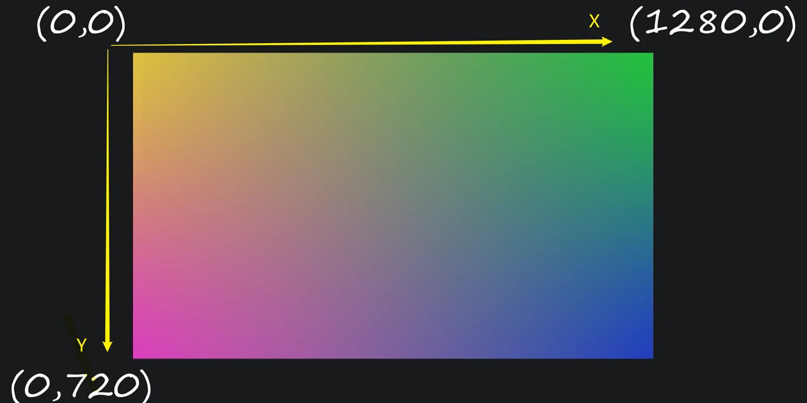
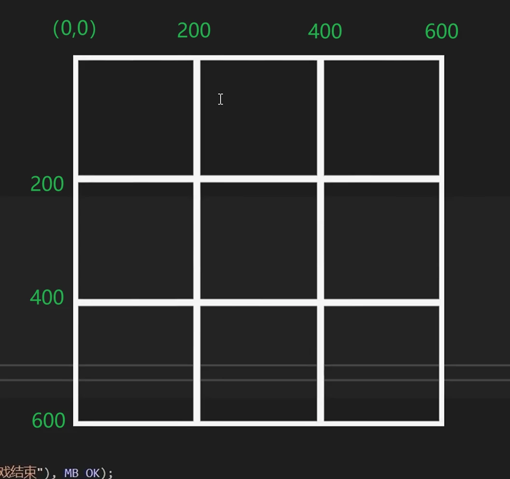

Table of Contents
- Overview
- Environment Setup
- Demo1 - Circle Follows Mouse
- Demo2 - Tic-Tac-Toe Game
- Reflection and Summary
Overview
Tech Stack：C++ + EasyX
Project Goal: Set up the EasyX environment and complete two small demos (a circle that follows the mouse, and a tic-tac-toe game). Understand the basic structure of a game loop.
Course Source：Bilibili-Voidmatrix
Environment Setup
EasyX: Just search for “EasyX” and download it directly from the official site.
To use EasyX functions, include <graphics.h> in your header file.
Demo1 - Circle Follows Mouse
Design Approach
- Create a window and set up the main game loop
- Draw a circle that follows the mouse
- Optimize rendering using double buffering
Development Steps
Initialize Window and Main Loop
Use initgraph() to initialize the window, and a while (true) loop to prevent it from closing instantly:
|
|
This infinite loop is the basic framework for all games. Input handling and screen updates happen inside it:
|
|
Draw the Circle
Use solidcircle() to draw the circle.
Handle Input
Use peekmessage() to process input.
In EasyX, mouse movement, clicks, and keyboard input are all considered “messages.” These messages are stored in a queue. Each time peekmessage() is called, EasyX tries to pull one message from the queue. If successful, it returns true; otherwise, false. So we use another loop to keep pulling messages until the queue is empty.
According to the docs, peekmessage() requires a parameter msg, which is a pointer to an ExMessage struct. One of its members, message, indicates the type of input (mouse, keyboard, etc.). So the input handling looks like this:
|
|
Clear Screen
If you don’t clear the screen, the ball will leave a trail as it follows the mouse. Use cleardevice() before each draw.
Optimize Drawing with Double Buffering
Use BeginBatchDraw(), FlushBatchDraw(), and EndBatchDraw():
|
|
Key Functions
initgraph()– initialize graphics windowpeekmessage()– get mouse movement messagescleardevice()– clear screensolidcircle(x, y, r)– draw circleBeginBatchDraw(),FlushBatchDraw(),EndBatchDraw()– double buffering
Concepts
EasyX Coordinate System
Origin is at the top-left of the screen. X increases to the right, Y increases downward.
Render Buffer
Think of the render buffer as a giant canvas. Drawing functions paint on it. Earlier drawings can be covered by later ones. cleardevice() fills the canvas with the current background color (default is black).
BeginBatchDraw() creates a new invisible canvas. All drawing happens on this canvas until FlushBatchDraw() and EndBatchDraw() swap it with the visible one. This prevents flickering caused by frequent redraws.
Game Loop
A typical game loop repeatedly performs:
|
|
Initialize game data before the loop (before BeginBatchDraw()), and release resources after the loop ends.
Demo2 - Tic-Tac-Toe Game
Game Description
Players take turns placing X or O on a 3 * 3 grid. If one player gets three in a row (horizontal, vertical, or diagonal), they win. If all nine cells are filled with no winner, it’s a draw. This demo supports local two-player mode only.
Design Approach
Three Core Elements in the Game Loop
Input: Handle mouse left-clicks. If a blank cell is clicked, place a piece.
Data Processing: Check for game-over conditions: three matching pieces in a line or full board. If the game ends, show a popup and exit the loop.
Rendering: Use line() to draw the grid and X pieces (diagonal lines), and circle() for O pieces. Display the current piece type in the top-left corner.
Data Structures
Board and Pieces: Use a 2D array char board_data[3][3] for the board. Use 'X' and 'O' for pieces, and '-' for empty cells.
Game Over Conditions
Win: Check all 8 possible winning combinations for both X and O.
Draw: If no '-' remains and no winner, it’s a draw.
Development Steps
Top-Down Approach
Start with the framework, then fill in details.
Game Loop Skeleton
Use bool running to control the loop. Use CheckWin() and CheckDraw() to determine game status.
|
|
Input Logic
Mouse coordinates are in pixels. Convert them to grid indices:

|
|
Then place the piece and switch to the other type.
Data Processing Logic
CheckWin() uses brute-force to check 8 patterns.
CheckDraw() loops through all cells to check for '-'.
|
|
Rendering Logic
Board: Use line() with pixel coordinates.
X Pieces: Use diagonal line() calls.
O Pieces: Use circle() with center offset by +100 pixels.
Drawing the prompt message: To make it work in more general coding environments, used some less common types and functions – but they work similarly to C’s printf().
|
|
Some font styling functions：
|
|
Optimization
Last Piece Not Drawn: If win-check happens before drawing, the popup blocks rendering. So draw first, then check.
High CPU Usage: When a computer runs a while loop, it executes extremely fast—our main game loop can complete thousands of iterations in an instant, consuming a large amount of CPU time. For most displays with a physical refresh rate of only 60Hz, this leads to unnecessary performance waste. A quick and crude solution is to use sleep(15) to force the program to pause for 15 milliseconds after each loop. However, this isn’t recommended. As the game grows in complexity, the amount of computation per loop can vary, depending on how the operating system allocates CPU resources. This means the actual time spent per loop may differ. So instead, we should calculate how long each frame takes to process and dynamically adjust the sleep time afterward. The recommended approach is to set a fixed frame rate manually. To do this, we use the GetTickCount() function, which returns the number of milliseconds since the program started running.
|
|
Full source code
|
|
Reflection and Summary
This was my first time truly understanding the game loop, double buffering, coordinate systems, and frame rate control. I’ve used C++ and raylib before, but mostly by copying code without fully grasping it. This time, I followed the tutorial step by step, focusing on fast and simple implementation rather than object-oriented design. I used a top-down approach: build the framework first, then solve each problem one by one.
I plan to finish all of VoidMatrix’s tutorials to improve my coding skills and deepen my understanding of game development. I also want to align my coding style with industry standards.